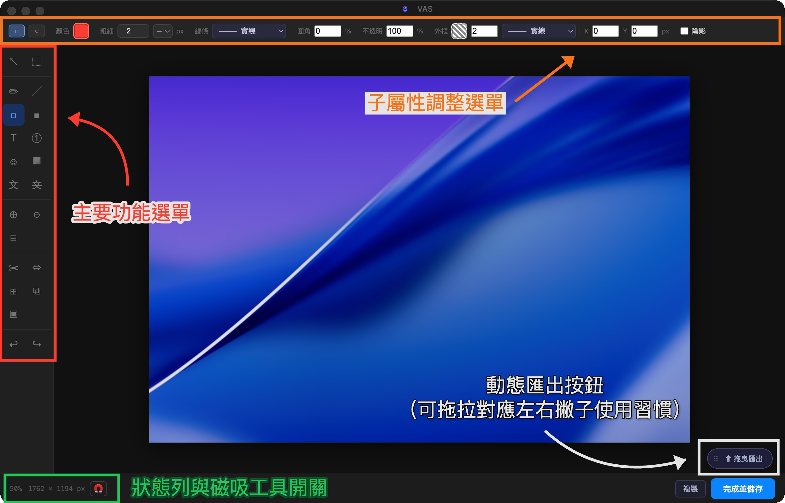

User Guide
VAS 操作手冊
工具列、編輯器介面與浮動工作列功能說明
Section 01
浮動工作列
懸浮在桌面上的截圖與工具入口
?可設定將工具列縮小成為呼吸燈，在桌面角落靜默待機，不佔空間。
- Tauri 專屬複製連結後靠近呼吸燈，會詢問是否進行網址截圖
- 全版本拖曳檔案靠近呼吸燈，會自動展開編輯器並載入檔案
Section 02
編輯器介面
三個主要操作區域

主要功能選單
左側垂直工具列。點選工具後，畫布上的操作會對應切換。目前使用中的工具以藍色高亮標示。
子屬性調整選單
頂部工具列。依所選工具動態更換內容，可調整顏色、粗細、不透明度、線條樣式等屬性。
動態匯出按鈕
右下角浮動按鈕。可拖曳移動位置，對應左右撇子不同使用習慣。完成後拖曳至目標應用程式即可匯出。Tauri 專屬 Tauri 另提供 Sharesheet 分享功能。
狀態列與磁吸工具開關
左下角狀態列。顯示目前縮放比例與畫布尺寸，並提供磁吸對齊開關，可快速啟用或關閉智慧磁吸功能。
Section 03
左側工具列
所有標注工具一覽，括號內為快捷鍵
標注
T文字T
①編號N
☺符號印章U
⬜馬賽克／模糊X
版面功能
✂裁切C
↔調整大小S
⊞延伸畫布E
⧉疊入圖片O
◱一鍵套版
Section 04
鍵盤快捷鍵
編輯器內建快捷鍵一覽
| 快捷鍵 | 功能 |
|---|
| V | 選取工具 |
| M | 框型選取 |
| P | 筆型工具 |
| L | 線條工具 |
| R | 矩形框 |
| B | 色塊 |
| T | 文字工具 |
| N | 編號標記 |
| U | 符號印章 |
| X | 馬賽克／模糊 |
| G | OCR 文字辨識 |
| K | 隱私遮蔽 |
| C | 裁切 |
| S | 調整大小 |
| E | 延伸畫布 |
| O | 疊入圖片 |
| ⌘ = | 放大 |
| ⌘ - | 縮小 |
| ⌘ 0 | 適合視窗 |
| Space ＋ 拖曳 | 平移畫布 |
| \ | 切換磁吸對齊 |
| ⌘ Z | 撤銷 |
| ⌘ ⇧ Z | 重做 |
| ⌘ C | 複製 |
| ⌘ V | 貼上 |
| ⌘ ⇧ C | 複製最終影像 |
| ⌘ A | 全選 |
| Delete / ⌫ | 刪除選取物件 |
| Shift ＋ 旋轉 | Shift＋旋轉：15° 鎖定 |
| Shift ＋ 拖曳角落 | Shift＋拖曳角落：等比縮放 |
| Alt ＋ 拖曳 | Alt＋拖曳：跳過磁吸 |
| ← → ↑ ↓ | 微調 1 px |
| Shift ＋ ← → ↑ ↓ | 微調 10 px |
| Double-click | 雙擊結束折線繪製 |
Section 05
自定義全域快捷鍵
Tauri 專屬
在偏好設定中為每個工具指定專屬的全域快捷鍵
開啟偏好設定 → 快捷鍵，點選工具後直接按下目標按鍵組合即可錄製。不合規的組合會即時反白提示。
按鍵接受規則
| 輸入 |
結果 |
| F1 … F12 |
✓F 鍵不需修飾鍵 |
| ⇧F5、⌘⌃A |
✓含修飾鍵的組合 |
| A、1、X |
✕裸字母或數字 |
| ⌘Q、⌘W、⌘H、⌘, |
✕系統保留快捷鍵 |
| 單獨 ⌘ / ⌃ / ⌥ |
✕單獨修飾鍵 |
// ── Popup Data ──────────────────────────────────────────────
const popupData = {
zh: {
select: {
icon: '↖', title: '選取', shortcut: 'V',
body: `
操作方式
- 點選標注物件以選取；點選空白處取消選取
- 空白處拖曳可框選多個物件
- Shift＋點選可逐一加選／取消物件
- 右鍵選單可調整圖層順序（移到最前／最後／上移／下移）
- 繪製完成後自動切回選取工具
選取單一物件時
顯示該物件的所有子屬性（依物件類型而定），包含顏色、線寬、透明度、大小、陰影等屬性。
色彩選取器
- 品牌色盤：預設主題色一鍵套用
- 近期使用色：自動記錄最近選取的顏色
- Hex 輸入：直接輸入色碼精準指定
- 滴管工具：放大鏡即時預覽取色
智慧對齊（磁吸）
- \\ 快速切換磁吸開關
- 藍色線：物件邊緣／中心對齊提示線
- 紅色線：等距參考線，顯示物件間距是否相等
- Alt＋拖曳：暫時跳過磁吸，自由放置物件
選取複數物件時（多選模式）
顯示對齊工具列：
${[['齊左','對齊最左邊物件的左緣'],['水中','水平置中'],['齊右','對齊最右邊物件的右緣'],['齊上','對齊最上方物件的上緣'],['垂中','垂直置中'],['齊下','對齊最下方物件的下緣'],['水均','水平均分間距'],['垂均','垂直均分間距'],['對齊中線','對齊畫布中心線'],['↔','水平鏡射'],['↕','垂直鏡射']].map(([k,v])=>`
${k}${v}
`).join('')}
`
},
boxselect: {
icon: '⬚', title: '框型選取', shortcut: 'M',
body: `
操作方式
- 拖曳框選像素區域
- 框選後可將該範圍的圖片內容複製貼上，成為新的物件
`
},
pen: {
icon: '✒', title: '筆型', shortcut: 'P',
body: `
屬性
${['顏色','線寬（px）','線條樣式（實線／虛線）','端點樣式（無／箭頭／圓點／方形）','筆畫描邊色','透明度','陰影'].map(t=>`${t}`).join('')}
`
},
line: {
icon: '╱', title: '線條', shortcut: 'L',
body: `
操作方式
- 拖曳繪製直線；Shift＋拖曳鎖定 90° 直角
- 選取後拖曳中間控制點可轉為貝茲曲線
- 折線模式下，雙擊結束繪製
屬性
${['顏色','線寬','線條樣式（實線／虛線）','起端樣式（無／箭頭／圓點）','末端樣式（無／箭頭／圓點）','直角折線模式','水平鏡射','垂直鏡射','筆畫描邊色','透明度','陰影'].map(t=>`${t}`).join('')}
`
},
rect: {
icon: '▭', title: '矩形框', shortcut: 'R',
body: `
形狀
${['矩形框','橢圓框'].map(t=>`${t}`).join('')}
操作方式
- 拖曳繪製外框
- Shift＋拖曳鎖定正方形／圓形（橢圓框同樣支援）
屬性
${['顏色','線寬','圓角半徑（矩形適用，0–100%）','線條樣式（實線／虛線）','描邊色','位移','水平鏡射','垂直鏡射','透明度','陰影'].map(t=>`${t}`).join('')}
`
},
fillrect: {
icon: '■', title: '色塊', shortcut: 'B',
body: `
形狀
${['矩形色塊','橢圓色塊'].map(t=>`${t}`).join('')}
操作方式
- 拖曳繪製填色形狀
- Shift＋拖曳鎖定正方形／圓形
屬性
${['填色（純色／漸層）','漸層兩端顏色','漸層角度轉盤（0–360°）','支援透明色','圓角半徑（矩形適用，0–100%）','邊框寬度','邊框顏色','線條樣式（實線／虛線）','透明度','陰影'].map(t=>`${t}`).join('')}
`
},
text: {
icon: 'T', title: '文字', shortcut: 'T',
body: `
操作方式
- 點選畫布放置文字框
- Enter 換行；Shift＋Enter 確認
- 雙擊已有文字可重新編輯
屬性
${['顏色','字型','字級（8–400 px）','粗體 / 斜體 / 底線 / 刪除線','對齊（左／中／右）','文字描邊（可輸入數值，提供快捷下拉）','文字背景色＋透明度','陰影'].map(t=>`${t}`).join('')}
`
},
number: {
icon: '①', title: '編號', shortcut: 'N',
body: `
屬性
${['尺寸（小／標準／大）','顏色','樣式（圓點／圓圈／實心圓／羅馬數字／中文圓括號／中文圓圈）','描邊粗細','描邊顏色','陰影','重置編號'].map(t=>`${t}`).join('')}
`
},
stamp: {
icon: '☺', title: '符號印章', shortcut: 'U',
body: `
操作方式
點選畫布放置符號；從浮動面板挑選符號類別與圖案。
符號分類
${['形狀','字母（圓圈體／全形／粗體／粗斜體／花體）','箭頭','其他（標記／貨幣／數學／技術符號）'].map(t=>`${t}`).join('')}
屬性
${['顏色','大小（px）','陰影'].map(t=>`${t}`).join('')}
`
},
mosaic: {
icon: '⬜', title: '馬賽克／模糊', shortcut: 'X',
body: `
操作方式
- 拖曳框選區域，立即套用遮蔽效果
- 套用後可切換至選取工具調整範圍大小或刪除物件，以補償自動辨識遮蔽的不足
屬性
${['模式（馬賽克／模糊）','馬賽克區塊尺寸（4 / 8 / 16 / 32 px）','模糊半徑（4 / 8 / 16 / 24 px）'].map(t=>`${t}`).join('')}
`
},
ocr: {
icon: '文', title: 'OCR 文字辨識', shortcut: 'G',
body: `
操作方式
- 拖曳選取區域，自動辨識範圍內的文字（支援中英文）
- 辨識結果顯示於浮動面板，提供「複製文字」按鈕
`
},
privacy: {
icon: '文', title: '隱私遮蔽', shortcut: 'K', strikeIcon: true,
body: `
全版本Electron 使用 Vision Framework，Tauri 另支援五層偵測（含日文）
操作方式
- 按 K 對全圖掃描；或拖曳指定範圍後掃描
- 自動偵測並遮蔽：身分證字號、統一編號、信用卡號、電話、Email、IPv4／IPv6、API Token 等
- 套用後可切換至選取工具微調或刪除遮蔽物件
屬性
${['模式（馬賽克／模糊）','馬賽克區塊尺寸（8 / 16 / 24 / 32 px）','模糊半徑（4 / 8 / 16 / 24 px）'].map(t=>`${t}`).join('')}
`
},
zoomin: {
icon: '⊕', title: '放大', shortcut: '⌘=',
body: `
操作方式
以游標為中心放大畫面，範圍 10%–400%。
縮放比例快捷選單
${['10%','25%','50%','75%','100%','150%','200%','300%','400%'].map(t=>`${t}`).join('')}
畫布導航
- Space＋拖曳：平移畫布
- 觸控板雙指縮放：以游標為中心縮放
- ⌘0：重置至適合視窗大小
`
},
zoomout: {
icon: '⊖', title: '縮小', shortcut: '⌘-',
body: `
操作方式
以游標為中心縮小畫面，範圍 10%–400%。
縮放比例快捷選單
${['10%','25%','50%','75%','100%','150%','200%','300%','400%'].map(t=>`${t}`).join('')}
畫布導航
- Space＋拖曳：平移畫布
- 觸控板雙指縮放：以游標為中心縮放
- ⌘0：重置至適合視窗大小
`
},
fit: {
icon: '⊡', title: '適合視窗', shortcut: '⌘0',
body: `
操作方式
按下後立即將畫面縮放至 100% 並 fit 視窗。
畫布導航
- Space＋拖曳：平移畫布
- 觸控板雙指縮放：以游標為中心縮放
`
},
crop: {
icon: '✂', title: '裁切', shortcut: 'C',
body: `
操作方式
- 拖曳建立裁切框，8 個控制點可調整範圍
- 方向鍵微調 1 px；Shift＋方向鍵 10 px
- 雙擊畫布或點選確認按鈕完成裁切
屬性
${['確認裁切按鈕','取消按鈕'].map(t=>`${t}`).join('')}
`
},
resize: {
icon: '↔', title: '調整大小', shortcut: 'S',
body: `
操作方式
- 開啟 popup 視窗，輸入目標寬度
- 高度依比例自動計算，所有標注物件同步等比縮放
- 範圍：1–8192 px
屬性
${['寬度輸入（px）','高度（唯讀，自動計算）','套用按鈕','取消按鈕'].map(t=>`${t}`).join('')}
`
},
extend: {
icon: '⊞', title: '延伸畫布', shortcut: 'E',
body: `
操作方式
- 開啟 popup 視窗，選擇延伸方向（九宮格方向盤）
- 輸入延伸距離（px），背景固定白色
- 視窗下方顯示延伸後的尺寸預覽
屬性
${['延伸方向（九方向）','延伸距離（px）','延伸後尺寸預覽','確認延伸按鈕','取消按鈕'].map(t=>`${t}`).join('')}
`
},
overlay: {
icon: '⧉', title: '疊入圖片', shortcut: 'O',
body: `
操作方式
- 點選後開啟檔案選擇器，選取圖片疊加於畫布上
- 可拖曳移動位置，8 個控制點縮放
- 作為浮動物件持續存在，拖曳匯出時自動合併至底圖
支援格式
${['JPG','PNG','WebP','GIF（第一幀）','SVG'].map(t=>`${t}`).join('')}
`
},
template: {
icon: '◱', title: '一鍵套版', shortcut: '—',
body: `
操作方式
- 開啟模板面板，選擇漸層背景樣式套用
- 提供 6 款：Apple 紅／橙／黃／綠／藍／紫
- 支援撤銷還原
屬性
${['留白（2–30%）','圓角（0–10）','陰影（0–10）'].map(t=>`${t}`).join('')}
社群媒體尺寸預設
${['LinkedIn（1200×627）','Instagram 1:1（1080×1080）','Instagram 4:5（1080×1350）','X（1600×900）'].map(t=>`${t}`).join('')}
`
},
undoredo: {
icon: '↩↪', title: '撤銷 ／ 重做', shortcut: '⌘Z ／ ⌘⇧Z',
body: `
⌘Z
撤銷：回到上一步操作
⌘⇧Z
重做：重做已撤銷的操作
`
}
},
en: {
select: {
icon: '↖', title: 'Select', shortcut: 'V',
body: `
How to use
- Click an annotation to select it; click empty area to deselect
- Drag on empty canvas to lasso-select multiple objects
- Shift-click to add or remove objects from selection
- Right-click to reorder layers (bring to front / send to back / move up / down)
- After drawing, the tool auto-switches back to Select
Single selection
Shows all sub-properties of the selected object (varies by type): colour, stroke width, opacity, size, shadow, and more.
Colour Picker
- Brand palette: apply theme colours in one click
- Recent colours: automatically saved from recent picks
- Hex input: enter a colour code for precise control
- Eyedropper: magnifier loupe for pixel-accurate sampling
Smart Alignment (Snapping)
- \\ toggles snapping on / off
- Blue lines: edge / centre alignment guides
- Red lines: equal-distance guides showing uniform spacing
- Alt + drag: temporarily bypass snapping for free placement
Multi-selection
Displays the alignment toolbar:
${[['Align L','Align to leftmost object'],['Center H','Horizontal centre'],['Align R','Align to rightmost object'],['Align T','Align to topmost object'],['Center V','Vertical centre'],['Align B','Align to bottommost object'],['Distrib H','Distribute horizontally'],['Distrib V','Distribute vertically'],['To Centre','Align to canvas centre'],['↔','Flip horizontal'],['↕','Flip vertical']].map(([k,v])=>`
${k}${v}
`).join('')}
`
},
boxselect: {
icon: '⬚', title: 'Box Select', shortcut: 'M',
body: `
How to use
- Drag to select a pixel region
- Copy and paste the selected area as a new object
`
},
pen: {
icon: '✒', title: 'Pen', shortcut: 'P',
body: `
How to use
Drag on the canvas to draw smooth freehand curves.
Properties
${['Colour','Stroke width (px)','Line style (solid / dashed)','Endpoint style (none / arrow / dot / square)','Stroke border colour','Opacity','Shadow'].map(t=>`${t}`).join('')}
`
},
line: {
icon: '╱', title: 'Line', shortcut: 'L',
body: `
How to use
- Drag to draw a straight line; Shift-drag to snap to 90°
- Drag the midpoint handle on a selected line to create a Bézier curve
- In polyline mode, double-click to finish drawing
Properties
${['Colour','Stroke width','Line style (solid / dashed)','Start endpoint (none / arrow / dot)','End endpoint (none / arrow / dot)','Right-angle mode','Flip horizontal','Flip vertical','Stroke border colour','Opacity','Shadow'].map(t=>`${t}`).join('')}
`
},
rect: {
icon: '▭', title: 'Rectangle', shortcut: 'R',
body: `
Shape
${['Rectangle','Ellipse'].map(t=>`${t}`).join('')}
How to use
- Drag to draw an outline shape
- Shift-drag to lock to square / circle (ellipse mode also supported)
Properties
${['Colour','Stroke width','Corner radius (rectangle only, 0–100%)','Line style (solid / dashed)','Border colour','Offset','Flip horizontal','Flip vertical','Opacity','Shadow'].map(t=>`${t}`).join('')}
`
},
fillrect: {
icon: '■', title: 'Fill Shape', shortcut: 'B',
body: `
Shape
${['Rectangle fill','Ellipse fill'].map(t=>`${t}`).join('')}
How to use
- Drag to draw a filled shape
- Shift-drag to lock to square / circle
Properties
${['Fill (solid / gradient)','Gradient colours (A & B)','Gradient angle dial (0–360°)','Transparent colour support','Corner radius (rectangle only, 0–100%)','Border width','Border colour','Line style (solid / dashed)','Opacity','Shadow'].map(t=>`${t}`).join('')}
`
},
text: {
icon: 'T', title: 'Text', shortcut: 'T',
body: `
How to use
- Click canvas to place a text box
- Enter for new line; Shift-Enter to confirm
- Double-click existing text to re-edit
Properties
${['Colour','Font','Size (8–400 px)','Bold / Italic / Underline / Strikethrough','Alignment (L / C / R)','Text stroke (custom value with quick dropdown)','Text background colour + opacity','Shadow'].map(t=>`${t}`).join('')}
`
},
number: {
icon: '①', title: 'Number', shortcut: 'N',
body: `
How to use
Click canvas to place an auto-incrementing number marker.
Properties
${['Size (small / standard / large)','Colour','Style (dot / circle / filled circle / Roman / CJK paren / CJK circle)','Stroke width','Stroke colour','Shadow','Reset counter'].map(t=>`${t}`).join('')}
`
},
stamp: {
icon: '☺', title: 'Symbol Stamp', shortcut: 'U',
body: `
How to use
Click canvas to place a symbol; choose category and glyph from the floating panel.
Categories
${['Shapes','Letters (circle / full-width / bold / bold-italic / script)','Arrows','Other (marks / currency / math / technical)'].map(t=>`${t}`).join('')}
Properties
${['Colour','Size (px)','Shadow'].map(t=>`${t}`).join('')}
`
},
mosaic: {
icon: '⬜', title: 'Mosaic / Blur', shortcut: 'X',
body: `
How to use
- Drag to select an area — effect is applied immediately
- After applying, switch to Select to resize or delete the mask object to refine automatic redaction
Properties
${['Mode (mosaic / blur)','Mosaic block size (4 / 8 / 16 / 32 px)','Blur radius (4 / 8 / 16 / 24 px)'].map(t=>`${t}`).join('')}
`
},
ocr: {
icon: '文', title: 'OCR', shortcut: 'G',
body: `
How to use
- Drag to select a region — text is recognised automatically (Chinese & English supported)
- Results appear in a floating panel with a "Copy Text" button
Properties
No adjustable properties
`
},
privacy: {
icon: '文', title: 'Privacy Mask', shortcut: 'K', strikeIcon: true,
body: `
All VersionsElectron uses Vision Framework; Tauri adds 5-layer detection (incl. Japanese)
How to use
- Press K to scan the full image, or drag to scan a specific region
- Auto-detects and masks: National ID, Tax ID, credit card numbers, phone numbers, Email, IPv4 / IPv6, API tokens, and more
- Switch to Select after scanning to fine-tune or delete mask objects
Properties
${['Mode (mosaic / blur)','Mosaic block size (8 / 16 / 24 / 32 px)','Blur radius (4 / 8 / 16 / 24 px)'].map(t=>`${t}`).join('')}
`
},
zoomin: {
icon: '⊕', title: 'Zoom In', shortcut: '⌘=',
body: `
How to use
Zoom in centred on the cursor. Range: 10%–400%.
Quick zoom presets
${['10%','25%','50%','75%','100%','150%','200%','300%','400%'].map(t=>`${t}`).join('')}
Canvas Navigation
- Space + drag: pan the canvas
- Trackpad pinch: zoom centred on cursor
- ⌘0: reset to fit window
`
},
zoomout: {
icon: '⊖', title: 'Zoom Out', shortcut: '⌘-',
body: `
How to use
Zoom out centred on the cursor. Range: 10%–400%.
Quick zoom presets
${['10%','25%','50%','75%','100%','150%','200%','300%','400%'].map(t=>`${t}`).join('')}
Canvas Navigation
- Space + drag: pan the canvas
- Trackpad pinch: zoom centred on cursor
- ⌘0: reset to fit window
`
},
fit: {
icon: '⊡', title: 'Fit to Window', shortcut: '⌘0',
body: `
How to use
Instantly resets the canvas to 100% and fits it to the window.
Canvas Navigation
- Space + drag: pan the canvas
- Trackpad pinch: zoom centred on cursor
`
},
crop: {
icon: '✂', title: 'Crop', shortcut: 'C',
body: `
How to use
- Drag to create a crop frame with 8 adjustment handles
- Arrow keys nudge 1 px; Shift-arrows nudge 10 px
- Double-click or click the confirm button to apply
Properties
${['Confirm button','Cancel button'].map(t=>`${t}`).join('')}
`
},
resize: {
icon: '↔', title: 'Resize', shortcut: 'S',
body: `
How to use
- Opens a popup — enter the target width
- Height is calculated automatically; all annotations scale proportionally
- Range: 1–8192 px
Properties
${['Width (px)','Height (read-only, auto)','Apply button','Cancel button'].map(t=>`${t}`).join('')}
`
},
extend: {
icon: '⊞', title: 'Extend Canvas', shortcut: 'E',
body: `
How to use
- Opens a popup — choose direction from the 9-point pad
- Enter the extension distance (px); background is fixed white
- Result dimensions are shown at the bottom of the popup
Properties
${['Direction (9 options)','Distance (px)','Result size preview','Confirm button','Cancel button'].map(t=>`${t}`).join('')}
`
},
overlay: {
icon: '⧉', title: 'Overlay Image', shortcut: 'O',
body: `
How to use
- Opens a file picker to place an image on the canvas
- Drag to reposition; 8-handle resize
- Stays as a floating object — merges into the base image on export
Supported formats
${['JPG','PNG','WebP','GIF (first frame)','SVG'].map(t=>`${t}`).join('')}
`
},
template: {
icon: '◱', title: 'One-click Template', shortcut: '—',
body: `
How to use
- Opens the template panel — click a gradient style to apply
- 6 gradients: Red / Orange / Yellow / Green / Blue / Purple
- Supports undo
Properties
${['Padding (2–30%)','Corner radius (0–10)','Shadow (0–10)'].map(t=>`${t}`).join('')}
Social media size presets
${['LinkedIn (1200×627)','Instagram 1:1 (1080×1080)','Instagram 4:5 (1080×1350)','X (1600×900)'].map(t=>`${t}`).join('')}
`
},
undoredo: {
icon: '↩↪', title: 'Undo / Redo', shortcut: '⌘Z / ⌘⇧Z',
body: `
⌘Z
Undo: revert to previous step
⌘⇧Z
Redo: restore the undone action
`
}
},
ja: {
select: {
icon: '↖', title: '選択', shortcut: 'V',
body: `
操作方法
- 注釈をクリックして選択；空白エリアをクリックで選択解除
- 空白キャンバスをドラッグして複数オブジェクトをまとめて選択
- Shift クリックで選択に追加／解除
- 右クリックメニューでレイヤー順序を変更（最前面 / 最背面 / 上へ / 下へ）
- 描画完了後、選択ツールに自動切替
単一選択
選択したオブジェクトのサブプロパティをすべて表示（種類によって異なります）：色・線幅・不透明度・サイズ・シャドウなど。
カラーピッカー
- ブランドパレット：テーマカラーをワンクリックで適用
- 最近使用した色：最近選択した色を自動保存
- Hex 入力：カラーコードを直接入力して正確に指定
- スポイト：ルーペ付きでピクセル単位の精密なカラーサンプリング
スマート整列（スナップ）
- \\ スナップのオン/オフを切替
- 青い線：エッジ / 中心の整列ガイド
- 赤い線：等間隔ガイド（均等な間隔を表示）
- Alt＋ドラッグ：一時的にスナップを無効にして自由配置
複数選択
整列ツールバーを表示：
${[['左揃え','最も左のオブジェクトの左端に揃える'],['中央H','水平中央揃え'],['右揃え','最も右のオブジェクトの右端に揃える'],['上揃え','最も上のオブジェクトの上端に揃える'],['中央V','垂直中央揃え'],['下揃え','最も下のオブジェクトの下端に揃える'],['均等H','水平方向に均等配置'],['均等V','垂直方向に均等配置'],['中心線','キャンバス中心線に揃える'],['↔','水平ミラー'],['↕','垂直ミラー']].map(([k,v])=>`
${k}${v}
`).join('')}
`
},
boxselect: {
icon: '⬚', title: '範囲選択', shortcut: 'M',
body: `
操作方法
- ドラッグして画素範囲を選択
- 選択範囲をコピー＆ペーストして新しいオブジェクトとして配置
`
},
pen: {
icon: '✒', title: 'ペン', shortcut: 'P',
body: `
操作方法
キャンバス上をドラッグしてなめらかなフリーハンド曲線を描きます。
プロパティ
${['色','線幅 (px)','線スタイル（実線 / 破線）','端点スタイル（なし / 矢印 / 点 / 四角）','アウトライン色','不透明度','シャドウ'].map(t=>`${t}`).join('')}
`
},
line: {
icon: '╱', title: '線条', shortcut: 'L',
body: `
操作方法
- ドラッグで直線を描画；Shift ドラッグで90°スナップ
- 選択した線の中点ハンドルをドラッグしてベジェ曲線に変換
- 折れ線モードではダブルクリックで描画を完了
プロパティ
${['色','線幅','線スタイル（実線 / 破線）','始点スタイル（なし / 矢印 / 点）','終点スタイル（なし / 矢印 / 点）','直角モード','水平ミラー','垂直ミラー','アウトライン色','不透明度','シャドウ'].map(t=>`${t}`).join('')}
`
},
rect: {
icon: '▭', title: '矩形', shortcut: 'R',
body: `
シェイプ
${['矩形','楕円'].map(t=>`${t}`).join('')}
操作方法
- ドラッグして枠線シェイプを描画
- Shift ドラッグで正方形 / 正円に固定（楕円モードも対応）
プロパティ
${['色','線幅','角丸（矩形のみ、0–100%）','線スタイル（実線 / 破線）','枠色','オフセット','水平ミラー','垂直ミラー','不透明度','シャドウ'].map(t=>`${t}`).join('')}
`
},
fillrect: {
icon: '■', title: '塗りつぶし', shortcut: 'B',
body: `
シェイプ
${['矩形塗りつぶし','楕円塗りつぶし'].map(t=>`${t}`).join('')}
操作方法
- ドラッグして塗りつぶしシェイプを描画
- Shift ドラッグで正方形 / 正円に固定
プロパティ
${['塗り（単色 / グラデーション）','グラデーション色（A・B）','グラデーション角度ダイヤル（0–360°）','透明色サポート','角丸（矩形のみ、0–100%）','枠線幅','枠線色','線スタイル（実線 / 破線）','不透明度','シャドウ'].map(t=>`${t}`).join('')}
`
},
text: {
icon: 'T', title: 'テキスト', shortcut: 'T',
body: `
操作方法
- キャンバスをクリックしてテキストボックスを配置
- Enter で改行；Shift-Enter で確定
- 既存のテキストをダブルクリックして再編集
プロパティ
${['色','フォント','サイズ（8–400 px）','太字 / 斜体 / 下線 / 取り消し線','揃え（左 / 中 / 右）','テキストアウトライン（クイックドロップダウン付き）','テキスト背景色＋不透明度','シャドウ'].map(t=>`${t}`).join('')}
`
},
number: {
icon: '①', title: '番号', shortcut: 'N',
body: `
操作方法
キャンバスをクリックして自動連番マーカーを配置します。
プロパティ
${['サイズ（小 / 標準 / 大）','色','スタイル（点 / 丸 / 塗り丸 / ローマ数字 / CJK括弧 / CJK丸数字）','線幅','線色','シャドウ','カウンターリセット'].map(t=>`${t}`).join('')}
`
},
stamp: {
icon: '☺', title: 'シンボルスタンプ', shortcut: 'U',
body: `
操作方法
キャンバスをクリックしてシンボルを配置；フローティングパネルでカテゴリとグリフを選択します。
カテゴリ
${['シェイプ','文字（丸囲み / 全角 / 太字 / 太字斜体 / スクリプト）','矢印','その他（記号 / 通貨 / 数学 / テクニカル）'].map(t=>`${t}`).join('')}
プロパティ
${['色','サイズ (px)','シャドウ'].map(t=>`${t}`).join('')}
`
},
mosaic: {
icon: '⬜', title: 'モザイク / ぼかし', shortcut: 'X',
body: `
操作方法
- ドラッグして範囲を指定——エフェクトが即時適用されます
- 適用後は選択ツールに切り替えてマスクオブジェクトのリサイズ・削除で微調整できます
プロパティ
${['モード（モザイク / ぼかし）','モザイクブロックサイズ（4 / 8 / 16 / 32 px）','ぼかし半径（4 / 8 / 16 / 24 px）'].map(t=>`${t}`).join('')}
`
},
ocr: {
icon: '文', title: 'OCR', shortcut: 'G',
body: `
操作方法
- ドラッグして範囲を指定——テキストが自動認識されます（中国語・英語・日本語対応）
- 結果はフローティングパネルに表示され、「テキストをコピー」ボタンで取得できます
`
},
privacy: {
icon: '文', title: 'プライバシー遮蔽', shortcut: 'K', strikeIcon: true,
body: `
全バージョンElectron は Vision Framework を使用；Tauri は5層検出（日本語含む）を追加
操作方法
- K キーで画像全体をスキャン、またはドラッグで範囲を指定
- 自動検出・遮蔽：マイナンバー・法人番号・クレジットカード番号・電話番号・メール・IPv4/IPv6・API トークンなど
- スキャン後は選択ツールに切り替えてマスクオブジェクトを微調整・削除できます
プロパティ
${['モード（モザイク / ぼかし）','モザイクブロックサイズ（8 / 16 / 24 / 32 px）','ぼかし半径（4 / 8 / 16 / 24 px）'].map(t=>`${t}`).join('')}
`
},
zoomin: {
icon: '⊕', title: '拡大', shortcut: '⌘=',
body: `
操作方法
カーソルを中心に拡大します。範囲：10%〜400%。
クイックズームプリセット
${['10%','25%','50%','75%','100%','150%','200%','300%','400%'].map(t=>`${t}`).join('')}
キャンバスナビゲーション
- Space＋ドラッグ：キャンバスをパン
- トラックパッドピンチ：カーソル中心にズーム
- ⌘0：ウィンドウに合わせてリセット
`
},
zoomout: {
icon: '⊖', title: '縮小', shortcut: '⌘-',
body: `
操作方法
カーソルを中心に縮小します。範囲：10%〜400%。
クイックズームプリセット
${['10%','25%','50%','75%','100%','150%','200%','300%','400%'].map(t=>`${t}`).join('')}
キャンバスナビゲーション
- Space＋ドラッグ：キャンバスをパン
- トラックパッドピンチ：カーソル中心にズーム
- ⌘0：ウィンドウに合わせてリセット
`
},
fit: {
icon: '⊡', title: 'ウィンドウに合わせる', shortcut: '⌘0',
body: `
操作方法
キャンバスを100%にリセットし、ウィンドウサイズにフィットさせます。
キャンバスナビゲーション
- Space＋ドラッグ：キャンバスをパン
- トラックパッドピンチ：カーソル中心にズーム
`
},
crop: {
icon: '✂', title: 'トリミング', shortcut: 'C',
body: `
操作方法
- ドラッグして8ハンドル付きのトリム枠を作成
- 矢印キーで1px単位；Shift＋矢印で10px単位の微調整
- ダブルクリックまたは確定ボタンで適用
プロパティ
${['確定ボタン','キャンセルボタン'].map(t=>`${t}`).join('')}
`
},
resize: {
icon: '↔', title: 'サイズ変更', shortcut: 'S',
body: `
操作方法
- ポップアップが開きます——目的の幅を入力
- 高さは自動計算；すべての注釈が比例スケール
- 範囲：1〜8192 px
プロパティ
${['幅 (px)','高さ（読み取り専用、自動）','適用ボタン','キャンセルボタン'].map(t=>`${t}`).join('')}
`
},
extend: {
icon: '⊞', title: 'キャンバス拡張', shortcut: 'E',
body: `
操作方法
- ポップアップが開きます——9点パッドで方向を選択
- 拡張距離 (px) を入力；背景は白で固定
- 結果のサイズはポップアップ下部に表示されます
プロパティ
${['方向（9種）','距離 (px)','結果サイズプレビュー','確定ボタン','キャンセルボタン'].map(t=>`${t}`).join('')}
`
},
overlay: {
icon: '⧉', title: '画像オーバーレイ', shortcut: 'O',
body: `
操作方法
- ファイルピッカーが開き、キャンバスに画像を配置
- ドラッグで位置変更；8ハンドルでリサイズ
- フローティングオブジェクトとして保持——書き出し時にベース画像に結合
対応フォーマット
${['JPG','PNG','WebP','GIF（最初のフレーム）','SVG'].map(t=>`${t}`).join('')}
`
},
template: {
icon: '◱', title: 'ワンクリックテンプレート', shortcut: '—',
body: `
操作方法
- テンプレートパネルが開きます——グラデーションスタイルをクリックして適用
- 6種：赤 / オレンジ / 黄 / 緑 / 青 / 紫
- 元に戻す対応
プロパティ
${['パディング（2〜30%）','角丸（0〜10）','シャドウ（0〜10）'].map(t=>`${t}`).join('')}
SNS サイズプリセット
${['LinkedIn (1200×627)','Instagram 1:1 (1080×1080)','Instagram 4:5 (1080×1350)','X (1600×900)'].map(t=>`${t}`).join('')}
`
},
undoredo: {
icon: '↩↪', title: '元に戻す / やり直し', shortcut: '⌘Z / ⌘⇧Z',
body: `
⌘Z
元に戻す：ひとつ前の状態に戻る
⌘⇧Z
やり直し：取り消した操作を復元する
`
}
}
};
// ── Modal Logic ───────────────────────────────────────────────
const modal = document.getElementById('toolModal');
const modalClose = document.getElementById('modalClose');
function openModal(toolKey) {
const lang = currentLang;
const data = popupData[lang][toolKey];
if (!data) return;
const iconEl = document.getElementById('modalIcon');
iconEl.innerHTML = data.strikeIcon
? `
${data.icon}`
: data.icon;
document.getElementById('modalTitle').textContent = data.title;
document.getElementById('modalShortcut').textContent = data.shortcut || '';
document.getElementById('modalBody').innerHTML = data.body;
modal.classList.remove('hidden');
document.body.style.overflow = 'hidden';
modalClose.focus();
}
function closeModal() {
modal.classList.add('hidden');
document.body.style.overflow = '';
}
modalClose.addEventListener('click', closeModal);
modal.addEventListener('click', e => { if (e.target === modal) closeModal(); });
document.addEventListener('keydown', e => { if (e.key === 'Escape') closeModal(); });
document.querySelectorAll('[data-tool]').forEach(chip => {
chip.addEventListener('click', () => openModal(chip.dataset.tool));
chip.addEventListener('keydown', e => {
if (e.key === 'Enter' || e.key === ' ') { e.preventDefault(); openModal(chip.dataset.tool); }
});
});
// currentLang is kept in sync inside switchLanguage()
// ── Keyboard Shortcut Accordion ──────────────────────────────
document.querySelectorAll('.kbd-acc-btn').forEach(function (btn) {
btn.addEventListener('click', function () {
var item = btn.closest('.kbd-acc-item');
var isOpen = item.classList.contains('open');
item.classList.toggle('open', !isOpen);
btn.setAttribute('aria-expanded', String(!isOpen));
});
});